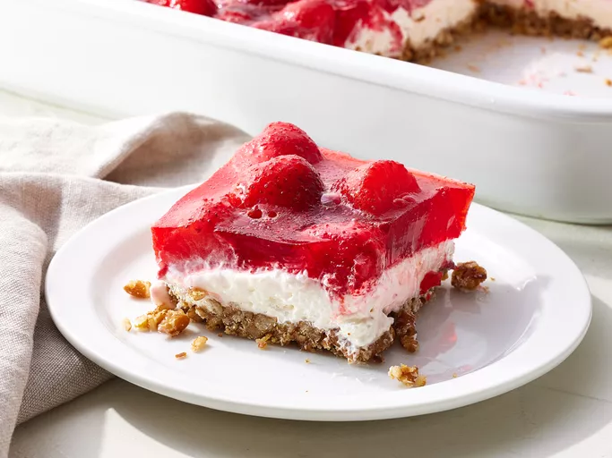

Strawberry Pretzel Salad

Strawberry pretzel salad doesn't sound exactly appealing, but boy is it good. The saltiness of the pretzel compliments the sweetness of the strawberry jell-o perfectly.
Throw in some cream cheese and cool whip, it's a perfect sweet snack for any time of the year!
Ingredients
- 2 cups crushed pretzels
- 3/4 cups butter, melted
- 3 tablespoons white sugar
- 1 (8 oz) package cream cheese, softened
- 1 cup white sugar
- 1 (8 oz) container frozen whipped topping, thawed
- 2 (3 oz) packages strawberry flavored jell-o
- 2 cups boiling water
- 2 (10 oz) packages frozen strawberries
Instructions
- Gather all ingredients and preheat the oven to 400 degrees F
- Stir crushed pretzels, melted buttter, and 3 tablespoons sugar together until well-combined; mix well press mixture into the bottomn of a 9x13-inch baking dish
- Bake in the preheated oven until set, about 8 to 10 minutes; set aside to cool.
- Place cream cheese and 1 cup sugar in a large bowl. Beat with an electric mixer until smooth; fold in whipped topping. Spread mixture onto cooled crust.
- Dissolve gelatin in boiling water. Stir in still-frozen strawberries and allow to set briefly. Pour and spread over cream cheese layer; refrigerate until set, at least 2 hours.
- Serve and enjoy!